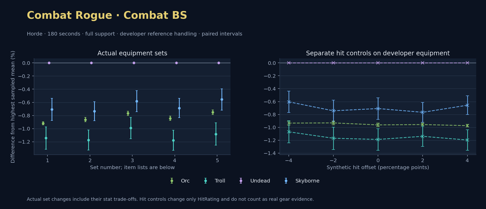

Horde · Orc / Troll / Undead / Skyborne

No pet or guardian appears in the reference combat metrics. Reference: Orc, developer equipment, 180 seconds and full support. Pet choices remain those of the developer build.
WoWSims developer · Backstab Combat
Unimplemented enchant or active set effects: [{"id": 1676, "pieces": 3, "effects": ["Restores 15 health per 5 sec."]}, {"id": 1676, "pieces": 5, "effects": ["When struck in combat, has a 5% chance to remove a Snare effect from yourself. Can only occur once every 60 sec."]}]
Unmeasured proc rates: [{"source": "set", "id": 1676, "pieces": 4, "kind": "ppm", "origin": "unknown"}, {"source": "item", "id": 19324, "name": "The Lobotomizer", "kind": "ppm", "origin": "vanilla"}, {"source": "enchant", "id": 1900, "name": "Enchant Weapon - Crusader", "kind": "ppm", "origin": "vanilla"}, {"source": "item", "id": 871, "name": "Flurry Axe", "kind": "ppm", "origin": "vanilla"}]
180 seconds, full support and original developer references. Hit below is generic sheet melee / spell hit; school and talent bonuses can be attached directly to spells.
| Race | DPS | Gap and interval | Generic hit | Replay |
|---|---|---|---|---|
| Undead | 704.70 | +0.000% ± 0.000 | 13.4% / 13.4% | Native input · Website JSON |
| Skyborne | 699.71 | -0.708% ± 0.167 | 13.4% / 13.4% | Native input · Website JSON |
| Orc | 698.22 | -0.919% ± 0.025 | 13.4% / 13.4% | Native input · Website JSON |
| Troll | 696.63 | -1.144% ± 0.169 | 13.4% / 13.4% | Native input · Website JSON |
| Slot | Item | ID | Enchant |
|---|---|---|---|
| Head | Darkmantle Cap | 226829 | Lesser Arcane Amalgamation |
| Neck | Beads of Ogre Might | 22150 | |
| Shoulder | Darkspear Pauldrons | 272105 | |
| Back | Earthweave Cloak | 21187 | Enchant Cloak - Agility |
| Chest | Darkmantle Tunic | 226825 | Enchant Chest - Living Stats |
| Wrist | Darkmantle Bracers | 226830 | Enchant Bracer - Agility |
| Hands | Darkmantle Grips | 226828 | Enchant Gloves - Greater Agility |
| Waist | Assassin's Waistguard | 272395 | |
| Legs | Darkmantle Pants | 226827 | Lesser Arcane Amalgamation |
| Feet | Darkmantle Footpads | 226831 | Enchant Boots - Minor Speed |
| Ring 1 | Don Julio's Band | 19325 | |
| Ring 2 | Might of Cenarius | 21189 | |
| Trinket 1 | Adaptive Combat Assistant | 272437 | |
| Trinket 2 | Rune of the Guard Captain | 19120 | |
| Main hand | The Lobotomizer | 19324 | Enchant Weapon - Crusader |
| Off hand | Flurry Axe | 871 | Enchant Weapon - Agility |
| Ranged / relic | Fahrad's Reloading Repeater | 22347 |
Published ranked alternatives · Published pre-raid
Recorded source replacements: [{"slot": "head", "from": 11735, "to": 252482, "publishedAlternativeRank": 1, "publishedEpDelta": -3.8, "reason": "First published alternative compatible with the current WoWSims database, class, faction and occupied slots."}, {"slot": "back", "from": 13340, "to": 272414, "publishedAlternativeRank": 1, "publishedEpDelta": -15.3, "reason": "First published alternative compatible with the current WoWSims database, class, faction and occupied slots."}, {"slot": "finger2", "from": 9533, "to": 285190, "publishedAlternativeRank": 2, "publishedEpDelta": -2.6, "reason": "First published alternative compatible with the current WoWSims database, class, faction and occupied slots."}, {"slot": "ranged", "from": 2100, "to": 13023, "publishedAlternativeRank": 1, "publishedEpDelta": -3.5, "reason": "First published alternative compatible with the current WoWSims database, class, faction and occupied slots."}]
Unimplemented enchant or active set effects: [{"id": 143, "pieces": 2, "effects": ["Improves your chance to hit by 2.0%."]}]
Unmeasured proc rates: [{"source": "enchant", "id": 1900, "name": "Enchant Weapon - Crusader", "kind": "ppm", "origin": "vanilla"}, {"source": "enchant", "id": 1900, "name": "Enchant Weapon - Crusader", "kind": "ppm", "origin": "vanilla"}]
180 seconds, full support and original developer references. Hit below is generic sheet melee / spell hit; school and talent bonuses can be attached directly to spells.
| Race | DPS | Gap and interval | Generic hit | Replay |
|---|---|---|---|---|
| Undead | 646.32 | +0.000% ± 0.000 | 9.2% / 9.2% | Native input · Website JSON |
| Skyborne | 641.57 | -0.735% ± 0.146 | 9.2% / 9.2% | Native input · Website JSON |
| Orc | 640.75 | -0.863% ± 0.033 | 9.2% / 9.2% | Native input · Website JSON |
| Troll | 638.74 | -1.174% ± 0.152 | 9.2% / 9.2% | Native input · Website JSON |
| Slot | Item | ID | Enchant |
|---|---|---|---|
| Head | Blue Suede Hat | 252482 | Lesser Arcane Amalgamation |
| Neck | Skibi's Pendant | 13089 | Enchant Necklace - Agility |
| Shoulder | Shadowcraft Spaulders | 16708 | |
| Back | Howler's Furs | 272414 | Enchant Cloak - Agility |
| Chest | Dawn Armor | 252483 | Enchant Chest - Greater Stats |
| Wrist | Shadowcraft Bracers | 16710 | Enchant Bracer - Agility |
| Hands | Devilsaur Gauntlets | 15063 | Enchant Gloves - Greater Agility |
| Waist | Assassin's Waistguard | 272395 | |
| Legs | Devilsaur Leggings | 15062 | Lesser Arcane Amalgamation |
| Feet | Shadowcraft Boots | 16711 | Enchant Boots - Greater Agility |
| Ring 1 | Cutthroat's Signet | 272408 | |
| Ring 2 | Wyvern Heart Band | 285190 | |
| Trinket 1 | Adaptive Combat Assistant | 272437 | |
| Trinket 2 | Rune of the Guard Captain | 19120 | |
| Main hand | Heartseeker | 12783 | Enchant Weapon - Crusader |
| Off hand | Scarlet Kris | 5267 | Enchant Weapon - Crusader |
| Ranged / relic | Eaglehorn Long Bow | 13023 |
Published one-slot hit alternative · Published pre-raid
One source-listed alternative; at least 80% of the source slot score retained. Reported hit selects the contrast; only native stats determine simulation outcomes. This is an experimental combination, not an endorsed best set.
Recorded source replacements: [{"slot": "head", "from": 11735, "to": 252482, "publishedAlternativeRank": 1, "publishedEpDelta": -3.8, "reason": "First published alternative compatible with the current WoWSims database, class, faction and occupied slots."}, {"slot": "back", "from": 13340, "to": 272414, "publishedAlternativeRank": 1, "publishedEpDelta": -15.3, "reason": "First published alternative compatible with the current WoWSims database, class, faction and occupied slots."}, {"slot": "finger2", "from": 9533, "to": 285190, "publishedAlternativeRank": 2, "publishedEpDelta": -2.6, "reason": "First published alternative compatible with the current WoWSims database, class, faction and occupied slots."}, {"slot": "ranged", "from": 2100, "to": 13023, "publishedAlternativeRank": 1, "publishedEpDelta": -3.5, "reason": "First published alternative compatible with the current WoWSims database, class, faction and occupied slots."}]
Unimplemented enchant or active set effects: [{"id": 143, "pieces": 2, "effects": ["Improves your chance to hit by 2.0%."]}]
Unmeasured proc rates: [{"source": "enchant", "id": 1900, "name": "Enchant Weapon - Crusader", "kind": "ppm", "origin": "vanilla"}, {"source": "enchant", "id": 1900, "name": "Enchant Weapon - Crusader", "kind": "ppm", "origin": "vanilla"}]
180 seconds, full support and original developer references. Hit below is generic sheet melee / spell hit; school and talent bonuses can be attached directly to spells.
| Race | DPS | Gap and interval | Generic hit | Replay |
|---|---|---|---|---|
| Undead | 637.55 | +0.000% ± 0.000 | 7.2% / 7.2% | Native input · Website JSON |
| Skyborne | 633.84 | -0.581% ± 0.161 | 7.2% / 7.2% | Native input · Website JSON |
| Orc | 632.66 | -0.768% ± 0.033 | 7.2% / 7.2% | Native input · Website JSON |
| Troll | 631.23 | -0.991% ± 0.162 | 7.2% / 7.2% | Native input · Website JSON |
| Slot | Item | ID | Enchant |
|---|---|---|---|
| Head | Blue Suede Hat | 252482 | Lesser Arcane Amalgamation |
| Neck | Skibi's Pendant | 13089 | Enchant Necklace - Agility |
| Shoulder | Shadowcraft Spaulders | 16708 | |
| Back | Howler's Furs | 272414 | Enchant Cloak - Agility |
| Chest | Dawn Armor | 252483 | Enchant Chest - Greater Stats |
| Wrist | Shadowcraft Bracers | 16710 | Enchant Bracer - Agility |
| Hands | Devilsaur Gauntlets | 15063 | Enchant Gloves - Greater Agility |
| Waist | Might of the Timbermaw | 19044 | |
| Legs | Devilsaur Leggings | 15062 | Lesser Arcane Amalgamation |
| Feet | Shadowcraft Boots | 16711 | Enchant Boots - Greater Agility |
| Ring 1 | Cutthroat's Signet | 272408 | |
| Ring 2 | Wyvern Heart Band | 285190 | |
| Trinket 1 | Adaptive Combat Assistant | 272437 | |
| Trinket 2 | Rune of the Guard Captain | 19120 | |
| Main hand | Heartseeker | 12783 | Enchant Weapon - Crusader |
| Off hand | Scarlet Kris | 5267 | Enchant Weapon - Crusader |
| Ranged / relic | Eaglehorn Long Bow | 13023 |
Published ranked alternatives · Published pre-raid
Recorded source replacements: [{"slot": "head", "from": 11735, "to": 252482, "publishedAlternativeRank": 1, "publishedEpDelta": -3.8, "reason": "First published alternative compatible with the current WoWSims database, class, faction and occupied slots."}, {"slot": "back", "from": 13340, "to": 272414, "publishedAlternativeRank": 1, "publishedEpDelta": -15.3, "reason": "First published alternative compatible with the current WoWSims database, class, faction and occupied slots."}, {"slot": "waist", "from": 227805, "to": 272395, "publishedAlternativeRank": 1, "publishedEpDelta": -9.1, "reason": "First published alternative compatible with the current WoWSims database, class, faction and occupied slots."}, {"slot": "finger2", "from": 17713, "to": 285190, "publishedAlternativeRank": 2, "publishedEpDelta": -9.9, "reason": "First published alternative compatible with the current WoWSims database, class, faction and occupied slots."}, {"slot": "ranged", "from": 2100, "to": 13023, "publishedAlternativeRank": 1, "publishedEpDelta": -3.5, "reason": "First published alternative compatible with the current WoWSims database, class, faction and occupied slots."}]
Unimplemented enchant or active set effects: [{"id": 143, "pieces": 2, "effects": ["Improves your chance to hit by 2.0%."]}]
Unmeasured proc rates: [{"source": "enchant", "id": 1900, "name": "Enchant Weapon - Crusader", "kind": "ppm", "origin": "vanilla"}, {"source": "enchant", "id": 1900, "name": "Enchant Weapon - Crusader", "kind": "ppm", "origin": "vanilla"}]
180 seconds, full support and original developer references. Hit below is generic sheet melee / spell hit; school and talent bonuses can be attached directly to spells.
| Race | DPS | Gap and interval | Generic hit | Replay |
|---|---|---|---|---|
| Undead | 645.40 | +0.000% ± 0.000 | 8.5% / 8.5% | Native input · Website JSON |
| Skyborne | 640.97 | -0.686% ± 0.147 | 8.5% / 8.5% | Native input · Website JSON |
| Orc | 639.96 | -0.844% ± 0.033 | 8.5% / 8.5% | Native input · Website JSON |
| Troll | 637.80 | -1.178% ± 0.152 | 8.5% / 8.5% | Native input · Website JSON |
| Slot | Item | ID | Enchant |
|---|---|---|---|
| Head | Blue Suede Hat | 252482 | Lesser Arcane Amalgamation |
| Neck | Skibi's Pendant | 13089 | Enchant Necklace - Agility |
| Shoulder | Shadowcraft Spaulders | 16708 | |
| Back | Howler's Furs | 272414 | Enchant Cloak - Agility |
| Chest | Dawn Armor | 252483 | Enchant Chest - Greater Stats |
| Wrist | Shadowcraft Bracers | 16710 | Enchant Bracer - Agility |
| Hands | Devilsaur Gauntlets | 15063 | Enchant Gloves - Greater Agility |
| Waist | Assassin's Waistguard | 272395 | |
| Legs | Devilsaur Leggings | 15062 | Lesser Arcane Amalgamation |
| Feet | Shadowcraft Boots | 16711 | Enchant Boots - Greater Agility |
| Ring 1 | Cutthroat's Signet | 272408 | |
| Ring 2 | Wyvern Heart Band | 285190 | |
| Trinket 1 | Adaptive Combat Assistant | 272437 | |
| Trinket 2 | Molten Heart of the Mountain | 249470 | |
| Main hand | Heartseeker | 12783 | Enchant Weapon - Crusader |
| Off hand | Scarlet Kris | 5267 | Enchant Weapon - Crusader |
| Ranged / relic | Eaglehorn Long Bow | 13023 |
Published one-slot hit alternative · Published pre-raid
One source-listed alternative; at least 80% of the source slot score retained. Reported hit selects the contrast; only native stats determine simulation outcomes. This is an experimental combination, not an endorsed best set.
Recorded source replacements: [{"slot": "head", "from": 11735, "to": 252482, "publishedAlternativeRank": 1, "publishedEpDelta": -3.8, "reason": "First published alternative compatible with the current WoWSims database, class, faction and occupied slots."}, {"slot": "back", "from": 13340, "to": 272414, "publishedAlternativeRank": 1, "publishedEpDelta": -15.3, "reason": "First published alternative compatible with the current WoWSims database, class, faction and occupied slots."}, {"slot": "waist", "from": 227805, "to": 272395, "publishedAlternativeRank": 1, "publishedEpDelta": -9.1, "reason": "First published alternative compatible with the current WoWSims database, class, faction and occupied slots."}, {"slot": "finger2", "from": 17713, "to": 285190, "publishedAlternativeRank": 2, "publishedEpDelta": -9.9, "reason": "First published alternative compatible with the current WoWSims database, class, faction and occupied slots."}, {"slot": "ranged", "from": 2100, "to": 13023, "publishedAlternativeRank": 1, "publishedEpDelta": -3.5, "reason": "First published alternative compatible with the current WoWSims database, class, faction and occupied slots."}]
Unimplemented enchant or active set effects: [{"id": 143, "pieces": 2, "effects": ["Improves your chance to hit by 2.0%."]}]
Unmeasured proc rates: [{"source": "enchant", "id": 1900, "name": "Enchant Weapon - Crusader", "kind": "ppm", "origin": "vanilla"}, {"source": "enchant", "id": 1900, "name": "Enchant Weapon - Crusader", "kind": "ppm", "origin": "vanilla"}]
180 seconds, full support and original developer references. Hit below is generic sheet melee / spell hit; school and talent bonuses can be attached directly to spells.
| Race | DPS | Gap and interval | Generic hit | Replay |
|---|---|---|---|---|
| Undead | 636.48 | +0.000% ± 0.000 | 6.5% / 6.5% | Native input · Website JSON |
| Skyborne | 632.94 | -0.556% ± 0.163 | 6.5% / 6.5% | Native input · Website JSON |
| Orc | 631.71 | -0.751% ± 0.035 | 6.5% / 6.5% | Native input · Website JSON |
| Troll | 629.59 | -1.083% ± 0.170 | 6.5% / 6.5% | Native input · Website JSON |
| Slot | Item | ID | Enchant |
|---|---|---|---|
| Head | Blue Suede Hat | 252482 | Lesser Arcane Amalgamation |
| Neck | Skibi's Pendant | 13089 | Enchant Necklace - Agility |
| Shoulder | Shadowcraft Spaulders | 16708 | |
| Back | Howler's Furs | 272414 | Enchant Cloak - Agility |
| Chest | Dawn Armor | 252483 | Enchant Chest - Greater Stats |
| Wrist | Shadowcraft Bracers | 16710 | Enchant Bracer - Agility |
| Hands | Devilsaur Gauntlets | 15063 | Enchant Gloves - Greater Agility |
| Waist | Might of the Timbermaw | 19044 | |
| Legs | Devilsaur Leggings | 15062 | Lesser Arcane Amalgamation |
| Feet | Shadowcraft Boots | 16711 | Enchant Boots - Greater Agility |
| Ring 1 | Cutthroat's Signet | 272408 | |
| Ring 2 | Wyvern Heart Band | 285190 | |
| Trinket 1 | Adaptive Combat Assistant | 272437 | |
| Trinket 2 | Molten Heart of the Mountain | 249470 | |
| Main hand | Heartseeker | 12783 | Enchant Weapon - Crusader |
| Off hand | Scarlet Kris | 5267 | Enchant Weapon - Crusader |
| Ranged / relic | Eaglehorn Long Bow | 13023 |
The same declared pool is available to every race. Each race keeps its best validation-sample set with its screening-selected racial policy. Separate samples confirm that choice, with fresh precision samples near the practical-loss boundary. Gaps use the highest sampled mean under that same duration, support and reference treatment as their reference. A zero reference gap does not certify a race; the main matrix also allows uncertainty in the leader.
| Pool | Seconds | Support | References | Race | DPS | Gap and interval | Racial policies / mana | Selected set | Generic hit: melee / spell | Replay |
|---|---|---|---|---|---|---|---|---|---|---|
| published-pre-raid | 60 | full | developer | Undead | 754.70 | +0.000% ± 0.00020,000 iterations | developer / developer / developerMana waits 0.0s | published-rogue-combat-daggers-horde-6efb33c5c37a15fa | 8.5% / 8.5% | Input · Result · Stats |
| published-pre-raid | 60 | full | developer | Orc | 753.22 | -0.196% ± 0.01020,000 iterations | developer / developer / developerMana waits 0.0s | published-rogue-combat-daggers-horde-6efb33c5c37a15fa | 8.5% / 8.5% | Input · Result · Stats |
| published-pre-raid | 60 | full | developer | Troll | 752.80 | -0.252% ± 0.05520,000 iterations | developer / developer / developerMana waits 0.0s | published-rogue-combat-daggers-horde-6efb33c5c37a15fa | 8.5% / 8.5% | Input · Result · Stats |
| published-pre-raid | 60 | full | developer | Skyborne | 750.38 | -0.573% ± 0.04820,000 iterations | developer / developer / developerMana waits 0.0s | published-rogue-combat-daggers-horde-6efb33c5c37a15fa | 8.5% / 8.5% | Input · Result · Stats |
| published-pre-raid | 60 | full | explicit | Undead | 732.35 | +0.000% ± 0.00020,000 iterations | developer / developer / developerMana waits 0.0s | published-rogue-combat-daggers-horde-6efb33c5c37a15fa | 8.5% / 8.5% | Input · Result · Stats |
| published-pre-raid | 60 | full | explicit | Troll | 730.13 | -0.304% ± 0.05520,000 iterations | developer / developer / developerMana waits 0.0s | published-rogue-combat-daggers-horde-6efb33c5c37a15fa | 8.5% / 8.5% | Input · Result · Stats |
| published-pre-raid | 60 | full | explicit | Skyborne | 727.85 | -0.616% ± 0.04920,000 iterations | developer / developer / developerMana waits 0.0s | published-rogue-combat-daggers-horde-6efb33c5c37a15fa | 8.5% / 8.5% | Input · Result · Stats |
| published-pre-raid | 60 | full | explicit | Orc | 658.10 | -10.138% ± 0.08820,000 iterations | oncd / developer / developerMana waits 0.0s | published-rogue-combat-daggers-horde-6efb33c5c37a15fa | 8.5% / 8.5% | Input · Result · Stats |
| published-pre-raid | 60 | self | developer | Undead | 394.41 | +0.000% ± 0.0005,000 iterations | developer / developer / developerMana waits 0.0s | published-rogue-combat-daggers-horde-6efb33c5c37a15fa | 8.5% / 8.5% | Input · Result · Stats |
| published-pre-raid | 60 | self | developer | Troll | 389.92 | -1.138% ± 0.1015,000 iterations | developer / developer / developerMana waits 0.0s | published-rogue-combat-daggers-horde-6efb33c5c37a15fa | 8.5% / 8.5% | Input · Result · Stats |
| published-pre-raid | 60 | self | developer | Orc | 389.33 | -1.288% ± 0.0295,000 iterations | developer / developer / developerMana waits 0.0s | published-rogue-combat-daggers-horde-6efb33c5c37a15fa | 8.5% / 8.5% | Input · Result · Stats |
| published-pre-raid | 60 | self | developer | Skyborne | 388.44 | -1.515% ± 0.0915,000 iterations | developer / developer / developerMana waits 0.0s | published-rogue-combat-daggers-horde-6efb33c5c37a15fa | 8.5% / 8.5% | Input · Result · Stats |
| published-pre-raid | 60 | self | explicit | Undead | 379.40 | +0.000% ± 0.0005,000 iterations | developer / developer / developerMana waits 0.0s | published-rogue-combat-daggers-horde-6efb33c5c37a15fa | 8.5% / 8.5% | Input · Result · Stats |
| published-pre-raid | 60 | self | explicit | Troll | 374.49 | -1.293% ± 0.1035,000 iterations | oncd / developer / developerMana waits 0.0s | published-rogue-combat-daggers-horde-6efb33c5c37a15fa | 8.5% / 8.5% | Input · Result · Stats |
| published-pre-raid | 60 | self | explicit | Skyborne | 373.18 | -1.638% ± 0.0915,000 iterations | developer / developer / developerMana waits 0.0s | published-rogue-combat-daggers-horde-6efb33c5c37a15fa | 8.5% / 8.5% | Input · Result · Stats |
| published-pre-raid | 60 | self | explicit | Orc | 335.36 | -11.608% ± 0.1845,000 iterations | oncd / developer / developerMana waits 0.0s | published-rogue-combat-daggers-horde-6efb33c5c37a15fa | 8.5% / 8.5% | Input · Result · Stats |
| published-pre-raid | 180 | full | developer | Undead | 646.16 | +0.000% ± 0.0005,000 iterations | developer / developer / developerMana waits 0.0s | published-rogue-combat-daggers-horde-98519ba0f75b20a5 | 9.2% / 9.2% | Input · Result · Stats · Website JSON |
| published-pre-raid | 180 | full | developer | Skyborne | 641.93 | -0.654% ± 0.0675,000 iterations | developer / developer / developerMana waits 0.0s | published-rogue-combat-daggers-horde-98519ba0f75b20a5 | 9.2% / 9.2% | Input · Result · Stats · Website JSON |
| published-pre-raid | 180 | full | developer | Orc | 640.59 | -0.863% ± 0.0155,000 iterations | developer / developer / developerMana waits 0.0s | published-rogue-combat-daggers-horde-98519ba0f75b20a5 | 9.2% / 9.2% | Input · Result · Stats · Website JSON |
| published-pre-raid | 180 | full | developer | Troll | 638.94 | -1.117% ± 0.0685,000 iterations | developer / developer / developerMana waits 0.0s | published-rogue-combat-daggers-horde-98519ba0f75b20a5 | 9.2% / 9.2% | Input · Result · Stats · Website JSON |
| published-pre-raid | 180 | full | explicit | Undead | 635.56 | +0.000% ± 0.0005,000 iterations | developer / developer / developerMana waits 0.0s | published-rogue-combat-daggers-horde-98519ba0f75b20a5 | 9.2% / 9.2% | Input · Result · Stats |
| published-pre-raid | 180 | full | explicit | Skyborne | 631.28 | -0.673% ± 0.0685,000 iterations | developer / developer / developerMana waits 0.0s | published-rogue-combat-daggers-horde-98519ba0f75b20a5 | 9.2% / 9.2% | Input · Result · Stats |
| published-pre-raid | 180 | full | explicit | Troll | 628.31 | -1.140% ± 0.0685,000 iterations | developer / developer / developerMana waits 0.0s | published-rogue-combat-daggers-horde-98519ba0f75b20a5 | 9.2% / 9.2% | Input · Result · Stats |
| published-pre-raid | 180 | full | explicit | Orc | 605.91 | -4.665% ± 0.0975,000 iterations | oncd / developer / developerMana waits 0.0s | published-rogue-combat-daggers-horde-98519ba0f75b20a5 | 9.2% / 9.2% | Input · Result · Stats |
| published-pre-raid | 180 | self | developer | Undead | 327.20 | +0.000% ± 0.0005,000 iterations | developer / developer / developerMana waits 0.0s | published-rogue-combat-daggers-horde-98519ba0f75b20a5 | 9.2% / 9.2% | Input · Result · Stats |
| published-pre-raid | 180 | self | developer | Skyborne | 321.85 | -1.635% ± 0.0655,000 iterations | developer / developer / developerMana waits 0.0s | published-rogue-combat-daggers-horde-6efb33c5c37a15fa | 8.5% / 8.5% | Input · Result · Stats |
| published-pre-raid | 180 | self | developer | Orc | 320.91 | -1.921% ± 0.0315,000 iterations | developer / developer / developerMana waits 0.0s | published-rogue-combat-daggers-horde-6efb33c5c37a15fa | 8.5% / 8.5% | Input · Result · Stats |
| published-pre-raid | 180 | self | developer | Troll | 320.69 | -1.989% ± 0.0665,000 iterations | oncd / developer / developerMana waits 0.0s | published-rogue-combat-daggers-horde-6efb33c5c37a15fa | 8.5% / 8.5% | Input · Result · Stats |
| published-pre-raid | 180 | self | explicit | Undead | 320.37 | +0.000% ± 0.0005,000 iterations | developer / developer / developerMana waits 0.0s | published-rogue-combat-daggers-horde-98519ba0f75b20a5 | 9.2% / 9.2% | Input · Result · Stats |
| published-pre-raid | 180 | self | explicit | Skyborne | 314.90 | -1.706% ± 0.0655,000 iterations | developer / developer / developerMana waits 0.0s | published-rogue-combat-daggers-horde-6efb33c5c37a15fa | 8.5% / 8.5% | Input · Result · Stats |
| published-pre-raid | 180 | self | explicit | Troll | 313.62 | -2.107% ± 0.0625,000 iterations | developer / developer / developerMana waits 0.0s | published-rogue-combat-daggers-horde-98519ba0f75b20a5 | 9.2% / 9.2% | Input · Result · Stats |
| published-pre-raid | 180 | self | explicit | Orc | 301.37 | -5.928% ± 0.1015,000 iterations | oncd / developer / developerMana waits 0.0s | published-rogue-combat-daggers-horde-98519ba0f75b20a5 | 9.2% / 9.2% | Input · Result · Stats |
| published-pre-raid | 300 | full | developer | Undead | 627.56 | +0.000% ± 0.0005,000 iterations | developer / developer / developerMana waits 0.0s | published-rogue-combat-daggers-horde-98519ba0f75b20a5 | 9.2% / 9.2% | Input · Result · Stats |
| published-pre-raid | 300 | full | developer | Skyborne | 623.53 | -0.643% ± 0.0565,000 iterations | developer / developer / developerMana waits 0.0s | published-rogue-combat-daggers-horde-98519ba0f75b20a5 | 9.2% / 9.2% | Input · Result · Stats |
| published-pre-raid | 300 | full | developer | Orc | 621.13 | -1.026% ± 0.0145,000 iterations | oncd / developer / developerMana waits 0.0s | published-rogue-combat-daggers-horde-98519ba0f75b20a5 | 9.2% / 9.2% | Input · Result · Stats |
| published-pre-raid | 300 | full | developer | Troll | 621.05 | -1.038% ± 0.0555,000 iterations | developer / developer / developerMana waits 0.0s | published-rogue-combat-daggers-horde-98519ba0f75b20a5 | 9.2% / 9.2% | Input · Result · Stats |
| published-pre-raid | 300 | full | explicit | Undead | 617.18 | +0.000% ± 0.0005,000 iterations | developer / developer / developerMana waits 0.0s | published-rogue-combat-daggers-horde-98519ba0f75b20a5 | 9.2% / 9.2% | Input · Result · Stats |
| published-pre-raid | 300 | full | explicit | Skyborne | 613.08 | -0.665% ± 0.0565,000 iterations | developer / developer / developerMana waits 0.0s | published-rogue-combat-daggers-horde-98519ba0f75b20a5 | 9.2% / 9.2% | Input · Result · Stats |
| published-pre-raid | 300 | full | explicit | Troll | 610.67 | -1.055% ± 0.0555,000 iterations | developer / developer / developerMana waits 0.0s | published-rogue-combat-daggers-horde-98519ba0f75b20a5 | 9.2% / 9.2% | Input · Result · Stats |
| published-pre-raid | 300 | full | explicit | Orc | 595.94 | -3.442% ± 0.0745,000 iterations | oncd / developer / developerMana waits 0.0s | published-rogue-combat-daggers-horde-98519ba0f75b20a5 | 9.2% / 9.2% | Input · Result · Stats |
| published-pre-raid | 300 | self | developer | Undead | 316.09 | +0.000% ± 0.0005,000 iterations | developer / developer / developerMana waits 0.0s | published-rogue-combat-daggers-horde-98519ba0f75b20a5 | 9.2% / 9.2% | Input · Result · Stats |
| published-pre-raid | 300 | self | developer | Skyborne | 310.72 | -1.697% ± 0.0535,000 iterations | developer / developer / developerMana waits 0.0s | published-rogue-combat-daggers-horde-98519ba0f75b20a5 | 9.2% / 9.2% | Input · Result · Stats |
| published-pre-raid | 300 | self | developer | Troll | 309.78 | -1.997% ± 0.0525,000 iterations | developer / developer / developerMana waits 0.0s | published-rogue-combat-daggers-horde-98519ba0f75b20a5 | 9.2% / 9.2% | Input · Result · Stats |
| published-pre-raid | 300 | self | developer | Orc | 309.42 | -2.109% ± 0.0195,000 iterations | oncd / developer / developerMana waits 0.0s | published-rogue-combat-daggers-horde-98519ba0f75b20a5 | 9.2% / 9.2% | Input · Result · Stats |
| published-pre-raid | 300 | self | explicit | Undead | 309.32 | +0.000% ± 0.0005,000 iterations | developer / developer / developerMana waits 0.0s | published-rogue-combat-daggers-horde-98519ba0f75b20a5 | 9.2% / 9.2% | Input · Result · Stats |
| published-pre-raid | 300 | self | explicit | Skyborne | 303.86 | -1.764% ± 0.0535,000 iterations | developer / developer / developerMana waits 0.0s | published-rogue-combat-daggers-horde-98519ba0f75b20a5 | 9.2% / 9.2% | Input · Result · Stats |
| published-pre-raid | 300 | self | explicit | Troll | 302.94 | -2.064% ± 0.0515,000 iterations | developer / developer / developerMana waits 0.0s | published-rogue-combat-daggers-horde-98519ba0f75b20a5 | 9.2% / 9.2% | Input · Result · Stats |
| published-pre-raid | 300 | self | explicit | Orc | 294.85 | -4.678% ± 0.0775,000 iterations | oncd / developer / developerMana waits 0.0s | published-rogue-combat-daggers-horde-98519ba0f75b20a5 | 9.2% / 9.2% | Input · Result · Stats |
| developer-reference | 60 | full | developer | Troll | 808.78 | +0.000% ± 0.00020,000 iterations | developer / developer / developerMana waits 0.0s | developer | 13.4% / 13.4% | Input · Result · Stats |
| developer-reference | 60 | full | developer | Undead | 807.81 | -0.119% ± 0.06120,000 iterations | developer / developer / developerMana waits 0.0s | developer | 13.4% / 13.4% | Input · Result · Stats |
| developer-reference | 60 | full | developer | Orc | 805.22 | -0.440% ± 0.06120,000 iterations | developer / developer / developerMana waits 0.0s | developer | 13.4% / 13.4% | Input · Result · Stats |
| developer-reference | 60 | full | developer | Skyborne | 802.24 | -0.808% ± 0.05620,000 iterations | developer / developer / developerMana waits 0.0s | developer | 13.4% / 13.4% | Input · Result · Stats |
| developer-reference | 60 | full | explicit | Troll | 785.12 | +0.000% ± 0.00020,000 iterations | developer / developer / developerMana waits 0.0s | developer | 13.4% / 13.4% | Input · Result · Stats |
| developer-reference | 60 | full | explicit | Undead | 784.56 | -0.071% ± 0.06220,000 iterations | developer / developer / developerMana waits 0.0s | developer | 13.4% / 13.4% | Input · Result · Stats |
| developer-reference | 60 | full | explicit | Skyborne | 778.81 | -0.804% ± 0.05820,000 iterations | developer / developer / developerMana waits 0.0s | developer | 13.4% / 13.4% | Input · Result · Stats |
| developer-reference | 60 | full | explicit | Orc | 711.49 | -9.378% ± 0.08420,000 iterations | oncd / developer / developerMana waits 0.0s | developer | 13.4% / 13.4% | Input · Result · Stats |
| developer-reference | 60 | self | developer | Undead | 418.10 | +0.000% ± 0.0005,000 iterations | developer / developer / developerMana waits 0.0s | developer | 13.4% / 13.4% | Input · Result · Stats |
| developer-reference | 60 | self | developer | Troll | 413.47 | -1.106% ± 0.1145,000 iterations | oncd / developer / developerMana waits 0.0s | developer | 13.4% / 13.4% | Input · Result · Stats |
| developer-reference | 60 | self | developer | Orc | 411.25 | -1.638% ± 0.0225,000 iterations | developer / developer / developerMana waits 0.0s | developer | 13.4% / 13.4% | Input · Result · Stats |
| developer-reference | 60 | self | developer | Skyborne | 410.73 | -1.761% ± 0.0935,000 iterations | developer / developer / developerMana waits 0.0s | developer | 13.4% / 13.4% | Input · Result · Stats |
| developer-reference | 60 | self | explicit | Undead | 402.46 | +0.000% ± 0.0005,000 iterations | developer / developer / developerMana waits 0.0s | developer | 13.4% / 13.4% | Input · Result · Stats |
| developer-reference | 60 | self | explicit | Troll | 397.42 | -1.253% ± 0.1185,000 iterations | oncd / developer / developerMana waits 0.0s | developer | 13.4% / 13.4% | Input · Result · Stats |
| developer-reference | 60 | self | explicit | Skyborne | 394.72 | -1.924% ± 0.0975,000 iterations | developer / developer / developerMana waits 0.0s | developer | 13.4% / 13.4% | Input · Result · Stats |
| developer-reference | 60 | self | explicit | Orc | 357.63 | -11.139% ± 0.1735,000 iterations | oncd / developer / developerMana waits 0.0s | developer | 13.4% / 13.4% | Input · Result · Stats |
| developer-reference | 180 | full | developer | Undead | 704.24 | +0.000% ± 0.0005,000 iterations | developer / developer / developerMana waits 0.0s | developer | 13.4% / 13.4% | Input · Result · Stats · Website JSON |
| developer-reference | 180 | full | developer | Skyborne | 699.52 | -0.671% ± 0.0715,000 iterations | developer / developer / developerMana waits 0.0s | developer | 13.4% / 13.4% | Input · Result · Stats · Website JSON |
| developer-reference | 180 | full | developer | Orc | 697.79 | -0.916% ± 0.0115,000 iterations | developer / developer / developerMana waits 0.0s | developer | 13.4% / 13.4% | Input · Result · Stats · Website JSON |
| developer-reference | 180 | full | developer | Troll | 696.24 | -1.136% ± 0.0745,000 iterations | developer / developer / developerMana waits 0.0s | developer | 13.4% / 13.4% | Input · Result · Stats · Website JSON |
| developer-reference | 180 | full | explicit | Undead | 693.16 | +0.000% ± 0.0005,000 iterations | developer / developer / developerMana waits 0.0s | developer | 13.4% / 13.4% | Input · Result · Stats |
| developer-reference | 180 | full | explicit | Skyborne | 688.12 | -0.728% ± 0.0735,000 iterations | developer / developer / developerMana waits 0.0s | developer | 13.4% / 13.4% | Input · Result · Stats |
| developer-reference | 180 | full | explicit | Troll | 684.97 | -1.181% ± 0.0745,000 iterations | developer / developer / developerMana waits 0.0s | developer | 13.4% / 13.4% | Input · Result · Stats |
| developer-reference | 180 | full | explicit | Orc | 662.75 | -4.388% ± 0.0915,000 iterations | oncd / developer / developerMana waits 0.0s | developer | 13.4% / 13.4% | Input · Result · Stats |
| developer-reference | 180 | self | developer | Undead | 354.32 | +0.000% ± 0.0005,000 iterations | developer / developer / developerMana waits 0.0s | developer | 13.4% / 13.4% | Input · Result · Stats |
| developer-reference | 180 | self | developer | Skyborne | 347.86 | -1.824% ± 0.0685,000 iterations | developer / developer / developerMana waits 0.0s | developer | 13.4% / 13.4% | Input · Result · Stats |
| developer-reference | 180 | self | developer | Orc | 346.44 | -2.224% ± 0.0165,000 iterations | developer / developer / developerMana waits 0.0s | developer | 13.4% / 13.4% | Input · Result · Stats |
| developer-reference | 180 | self | developer | Troll | 346.39 | -2.239% ± 0.0715,000 iterations | oncd / developer / developerMana waits 0.0s | developer | 13.4% / 13.4% | Input · Result · Stats |
| developer-reference | 180 | self | explicit | Undead | 347.14 | +0.000% ± 0.0005,000 iterations | developer / developer / developerMana waits 0.0s | developer | 13.4% / 13.4% | Input · Result · Stats |
| developer-reference | 180 | self | explicit | Skyborne | 340.49 | -1.917% ± 0.0705,000 iterations | developer / developer / developerMana waits 0.0s | developer | 13.4% / 13.4% | Input · Result · Stats |
| developer-reference | 180 | self | explicit | Troll | 338.98 | -2.349% ± 0.0725,000 iterations | oncd / developer / developerMana waits 0.0s | developer | 13.4% / 13.4% | Input · Result · Stats |
| developer-reference | 180 | self | explicit | Orc | 326.37 | -5.982% ± 0.0955,000 iterations | oncd / developer / developerMana waits 0.0s | developer | 13.4% / 13.4% | Input · Result · Stats |
| developer-reference | 300 | full | developer | Undead | 685.36 | +0.000% ± 0.0005,000 iterations | developer / developer / developerMana waits 0.0s | developer | 13.4% / 13.4% | Input · Result · Stats |
| developer-reference | 300 | full | developer | Skyborne | 680.90 | -0.651% ± 0.0595,000 iterations | developer / developer / developerMana waits 0.0s | developer | 13.4% / 13.4% | Input · Result · Stats |
| developer-reference | 300 | full | developer | Troll | 678.15 | -1.051% ± 0.0595,000 iterations | developer / developer / developerMana waits 0.0s | developer | 13.4% / 13.4% | Input · Result · Stats |
| developer-reference | 300 | full | developer | Orc | 677.95 | -1.081% ± 0.0135,000 iterations | oncd / developer / developerMana waits 0.0s | developer | 13.4% / 13.4% | Input · Result · Stats |
| developer-reference | 300 | full | explicit | Undead | 674.49 | +0.000% ± 0.0005,000 iterations | developer / developer / developerMana waits 0.0s | developer | 13.4% / 13.4% | Input · Result · Stats |
| developer-reference | 300 | full | explicit | Skyborne | 669.79 | -0.698% ± 0.0605,000 iterations | developer / developer / developerMana waits 0.0s | developer | 13.4% / 13.4% | Input · Result · Stats |
| developer-reference | 300 | full | explicit | Troll | 666.99 | -1.112% ± 0.0595,000 iterations | developer / developer / developerMana waits 0.0s | developer | 13.4% / 13.4% | Input · Result · Stats |
| developer-reference | 300 | full | explicit | Orc | 652.76 | -3.223% ± 0.0705,000 iterations | oncd / developer / developerMana waits 0.0s | developer | 13.4% / 13.4% | Input · Result · Stats |
| developer-reference | 300 | self | developer | Undead | 343.09 | +0.000% ± 0.0005,000 iterations | developer / developer / developerMana waits 0.0s | developer | 13.4% / 13.4% | Input · Result · Stats |
| developer-reference | 300 | self | developer | Skyborne | 336.66 | -1.873% ± 0.0585,000 iterations | developer / developer / developerMana waits 0.0s | developer | 13.4% / 13.4% | Input · Result · Stats |
| developer-reference | 300 | self | developer | Troll | 335.52 | -2.205% ± 0.0595,000 iterations | oncd / developer / developerMana waits 0.0s | developer | 13.4% / 13.4% | Input · Result · Stats |
| developer-reference | 300 | self | developer | Orc | 334.91 | -2.384% ± 0.0165,000 iterations | oncd / developer / developerMana waits 0.0s | developer | 13.4% / 13.4% | Input · Result · Stats |
| developer-reference | 300 | self | explicit | Undead | 335.92 | +0.000% ± 0.0005,000 iterations | developer / developer / developerMana waits 0.0s | developer | 13.4% / 13.4% | Input · Result · Stats |
| developer-reference | 300 | self | explicit | Skyborne | 329.42 | -1.936% ± 0.0585,000 iterations | developer / developer / developerMana waits 0.0s | developer | 13.4% / 13.4% | Input · Result · Stats |
| developer-reference | 300 | self | explicit | Troll | 328.19 | -2.302% ± 0.0605,000 iterations | oncd / developer / developerMana waits 0.0s | developer | 13.4% / 13.4% | Input · Result · Stats |
| developer-reference | 300 | self | explicit | Orc | 320.01 | -4.736% ± 0.0735,000 iterations | oncd / developer / developerMana waits 0.0s | developer | 13.4% / 13.4% | Input · Result · Stats |
180 seconds, full support and the developer equipment anchor. These checks test creature sensitivity without a full gear search.
| Target | References | Race | DPS | Gap and interval | Replay |
|---|---|---|---|---|---|
| beast | developer | Troll | 730.18 | +0.000% ± 0.000 | Input · Result |
| beast | developer | Undead | 704.70 | -3.490% ± 0.164 | Input · Result |
| beast | developer | Skyborne | 699.71 | -4.174% ± 0.160 | Input · Result |
| beast | developer | Orc | 697.92 | -4.419% ± 0.163 | Input · Result |
| beast | explicit | Troll | 718.73 | +0.000% ± 0.000 | Input · Result |
| beast | explicit | Undead | 693.95 | -3.447% ± 0.171 | Input · Result |
| beast | explicit | Skyborne | 688.80 | -4.163% ± 0.166 | Input · Result |
| beast | explicit | Orc | 663.25 | -7.718% ± 0.202 | Input · Result |
| elemental | developer | Skyborne | 733.72 | +0.000% ± 0.000 | Input · Result |
| elemental | developer | Undead | 704.70 | -3.956% ± 0.162 | Input · Result |
| elemental | developer | Orc | 697.92 | -4.880% ± 0.160 | Input · Result |
| elemental | developer | Troll | 696.33 | -5.097% ± 0.159 | Input · Result |
| elemental | explicit | Skyborne | 722.28 | +0.000% ± 0.000 | Input · Result |
| elemental | explicit | Undead | 693.95 | -3.922% ± 0.156 | Input · Result |
| elemental | explicit | Troll | 685.42 | -5.104% ± 0.164 | Input · Result |
| elemental | explicit | Orc | 663.25 | -8.172% ± 0.200 | Input · Result |
Some equipment has unimplemented enchant or set effects; Some equipment uses unmeasured proc rates; Sensitive to unavailable rotation references
The APL is in constant flux due to bug fixes and new findings; if your DPS drops dramatically, reset it back to "Auto" in the Rotation tab!; Mutilate does not have a default APL currently. It will not be automatically used when talented.
These known-issue notes are source context. Runtime checks establish current cast coverage, including Mutilate. They do not prove every mechanic matches the game.